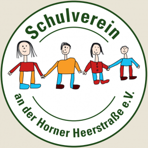

Engagement für unsere Schule.
Der Schulverein wurde im November 1996 als gemeinnütziger Verein gegründet.
Ziel des Vereins ist es, Schulprojekte und Veranstaltungen finanziell und ideell zu unterstützen.
Durch Mitgliedsbeiträge, Spenden und Einnahmen aus Veranstaltungen können Projekte ermöglicht werden, die ohne zusätzliche Unterstützung vielleicht nicht realisierbar wären.
